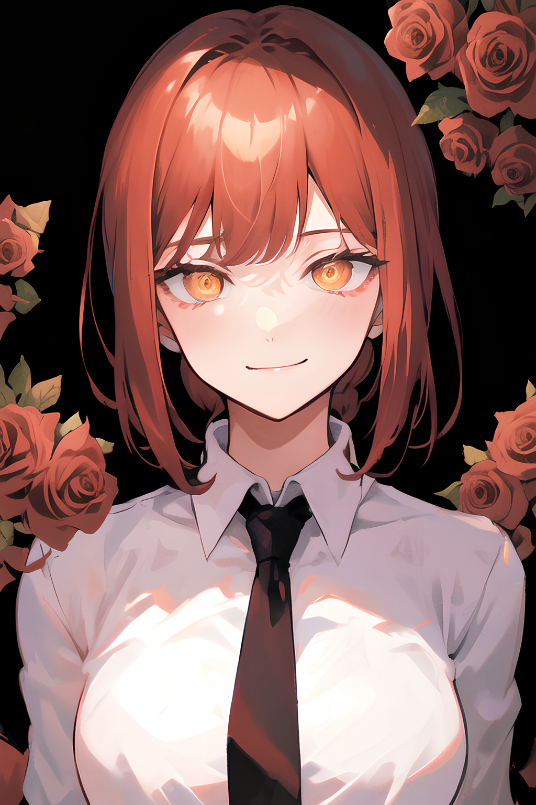
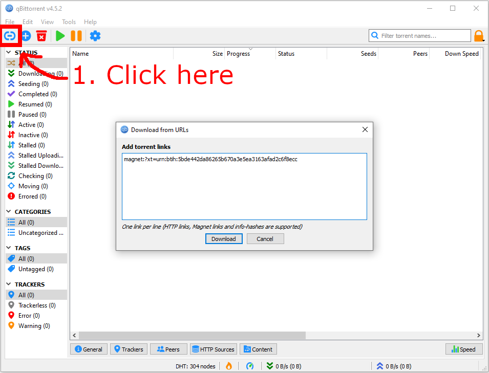
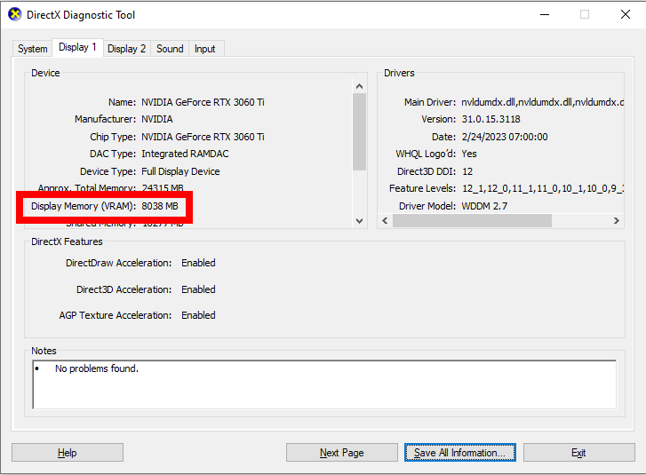
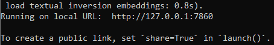
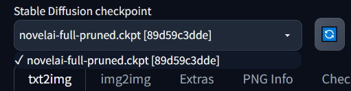
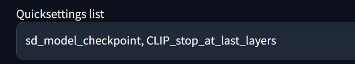
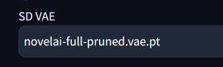

Beginner guide to installing and running Novel AI for free [NAI Diffusion]
by Phuc Lam
Novel AI, also known as NAI Diffusion and NAI, is a cloud based, paid subscription service launched in October 2022.
The cheapest monthly pricing plan to access the image generation tool is $10. However, you can use Novel AI for free on your own computer while getting the same exact results.
The purpose of this guide is to help you install and run NAI on your computer using AUTOMATIC1111's Web UI as quickly as possible. I will go through everything, making it as simple as possible.

The installation will take around 10 to 15 minutes, minus download times. This guide will only cover installation for Windows and Nvidia GPU.
Minimum Requirements
- Operating System: Windows 7 or newer
- System Storage: GB
- RAM: 16GB
- GPU: Nvidia Maxwell (GTX 7xx) or newer
- GPU VRAM: 2GB
You can check your system hardware specifications by typing dxdiag in the search bar. You can see your GPU specification under the Display 1 tab.
You can also use the existing software Task Manager. When you open the program, click on More details at the bottom of the program, then Performance at the top to see your hardware specifications.
Installations
Novel AI's Model
Before downloading anything, you will need a torrent client. I personally recommend
qBittorrent.
You will need to download 2 files:
- animefull-final-pruned (folder)
- animevae.pt
Here's the magnet link for the Novel AI leak:
magnet:?xt=urn:btih:5bde442da86265b670a3e5ea3163afad2c6f8ecc
Or you can use your own link; the leak can be easily found online. Choose the source that won't harm you.
Add the magnet link by clicking the Add torrent link button on the top left of qBittorrent.
Paste the magnet link into the popup window, then click Download. This window will appear, if there's nothing on the right side, wait a bit as qBittorrent is retrieving the data.

Deselect everything except for the animefull-final-pruned folder and animevae.pt that can be found in the stablekpt subfolder. (You can quickly deselect everything by deselecting novelaileak first). Then click OK.
While you're downloading the model, you can move onto the next step.
Python and Git
Skip this step if you have already installed Python 3.10 and Git.
Download Git from their official website.
Get the Standalone Installer for your operating system. If you don't know whether to get 32-bit or 64-bit, you can check it by looking at the System type in the About your PC setting.
Run the .exe file and install the software. The default settings are fine, but make sure Git Bash Here under Windows Explorer Integration is enabled.
Download the latest version of Python 3.10 from their official website. Download the Windows installer option. Verify that you got the right bit version (32-bit or 64-bit).
Make sure Add python.exe to PATH is enabled when installing Python.
AUTOMATIC1111's Web UI
This is the browser interface you will use for your image generation. I have tried using other browser interfaces, but they pale in comparison with AUTOMATIC1111.
Open Windows Explorer and create a folder where you will be installing the Web UI. For this example, I'm using C:\AI Arts. Make sure you have at least 15GB of storage space on your drive.
Right-click in the folder you just created and select Git Bash Here.

Paste the following command into the Git window that just popped up: git clone https://github.com/AUTOMATIC1111/stable-diffusion-webui
This will start downloading AUTOMATIC1111's Web UI. It will look something like this when it finishes downloading.

GPU VRAM
If you have over 4GB of VRAM, you can skip this step.
To check your VRAM, type dxdiag into the search bar. You can check your VRAM by looking for Display Memory (VRAM) under the Display 1 tab.
Go inside the stable-diffusion-webui folder you just downloaded, right-click webui-user.bat, and select Edit. You will be adding one of these options below to set COMMANDLINE_ARGS=
- If you have 2GB or less of VRAM, add --lowvram
- If you have 4GB or less of VRAM, add --medvram
Remember to save the file.
Pre-run Configuration
After you finish installing everything, head to the NAI leak folder, novelaileak/stablekpt. You want these 2 files:
- model.ckpt inside the animefull-final-pruned
folder.
(novelaileak/stablekpt/animefull-final-pruned) - animevae.pt inside the stablekpt folder.
(novelaileak/stablekpt)
You would want to rename these 2 files, so you wouldn't lose track of them when you have more models installed. Here's an example of how I renamed them. Before you rename them, only rename the part before the fullstops, keep everything after the fullstops the same. Here's an example of how I did it:
- model.ckpt --> novelai-full-pruned.ckpt
- animevae.pt --> novelai-full-pruned.vae.pt
(You need the .vae.pt at the end)
Move the novelai-full-pruned.ckpt file into the Web UI's folder stable-diffusion-webui/models/Stable-diffusion. Then, move the animevae.pt file into the folder stable-diffusion-webui/models/VAE.
Now you're ready to run the program.
First Run
Double-click webui-user.bat in the stable-diffusion-webui folder. This will open a Command Prompt window. On its first run, it will automatically download and install additional files required. This will take a few minutes.
When it finishes installing everything, you will see the line Running on local URL: http://127.0.0.1:7860 at the bottom of the Command Prompt. Copy the address. This address should be the same for everyone; if it's not, then don't worry.
If your internet dies while the program is downloading files, just close the Command Prompt and run webui-user.bat again. This happened to me the first time I set it up.
Now open up your web browser (whether it's Chrome, Firefox, Edge, or any other) and paste in the address to the search bar. It will look something like this.

You won't be able to access this page from other devices or from the internet without further configuration.
Configuring Web UI's Settings
We now need to configure some settings before we generate our first image.
First, activate the Novel AI model by selecting novelai-full-pruned.ckpt in the drop-down box on the top left of the page. This will be where you change different models for the image generation if you decide to add more models in the future.
Next, click on the Settings tab at the top of the page and make these 2 changes. There are a lot of settings, so I recommend clicking the Show all pages button on the left side of the page and finding the settings by using CTRL F.
- Clip skip to 2

- Eta noise delta seed to 31337

Click Apply settings and Reload UI at the top of the page, then go back to the txt2img tab.
I will give a simple explanation of what these changes do in the Extended Explanations section at the end of the guide. Also, I will give further, more specific configurations there.
Generating Your First Image
It's time for the long-awaited image generation. We will try generating a test image to check if everything has been set up correctly.

In the txt2img tab, use the exact following values in their respective areas.
- Prompt: {masterpiece, best quality, highres}, asuna_(sao), 1girl, {{cherry_blossoms}}, choker, skirt, looking at viewer, petals, {{brown eyes}}
- Negative prompt: {nsfw}, (worst quality, low quality:1.4), (depth of field, blurry:1.2), (greyscale, monochrome:1.1), lowres, bad anatomy, bad hands, text, error, missing fingers, extra digit, fewer digits, cropped, normal quality, jpeg artifacts,signature, watermark, username, blurry, artist name
- Sampling method: Euler
- Sampling steps: 28
- Width: 512
- Height: 768
- CFG Scale: 7
- Seed: 1055341496
Click the Generate button in the upper right corner and wait for the AI to render your picture. You should end up with an identical picture of Asuna.

You want the image to be at least 95% identical to the target picture. I will be making a troubleshooting guide in the future.
I will explain some of the more confusing fields in txt2img in the Extended Explanations section.
Tips For Beginners
The values you used to generate the Asuna illustration aren't bad, you can keep using some of them for your next generations. Try playing around with them, tweaking some of them can lead to better results. Here are some tips for your AI-generated arts journey!
- Begin your prompts of with {masterpiece, best quality, highres}
- Try using "tags" rather than sentences for your prompts. This will help you get better, more consistent results
- To get better at prompting, check out the Danbooru tag groups. Novel AI model and most anime models use Danbooru for their training data. You can search for tags on the website as well. (This website contains a lot of NSFW; you can turn on Safe Mode in the settings by signing up)

- Start by using the following negative prompts, they should be sufficient to give you reliable results: {nsfw}, (worst quality, low quality:1.4), (depth of field, blurry:1.2), (greyscale, monochrome:1.1), lowres, bad anatomy, bad hands, text, error, missing fingers, extra digit, fewer digits, cropped, normal quality, jpeg artifacts,signature, watermark, username, blurry, artist name
- Set your seed to -1 to randomize your results
- You can get the Seed of a picture you like when generating with Seed set to -1 by clicking on the picture and going below the picture. All of its metadata will be here
- To exit the program, you only need to close the console (Command Prompt)
- All generated images are automatically saved on your PC. Just click the yellow folder icon below the picture, and it will open up the folder where they are stored.

- There is not one best setting, experiment!
These are everything you need to get started; continue reading if you wish to learn more!
Extended Explanations
I will only be explaining the functionality of what these settings do rather than their technicality.
Read the highlighted text if you want the TL;DR version.
Clip Skip
Regarding Clip skip, some trained models don't work well with Clip skip being set at 2. So I recommend adding CLIP_stop_at_last_layers to the Quicksettings list in the Settings tab.
This will allow you to quickly change the value of Clip skip back to 1 if it doesn't work well with your model. However, it does work well with the Novel AI model and the majority of the current popular anime models.

Eta Noise Seed Delta
This setting basically adds the number you set to your seed number when you generate images. It's important to be able to reproduce the same image when using the same seed. The default value for Eta noise seed delta is -1, which means a random number is added to the seed number every time, so you can't re-generate the same image.
VAE
If your images come out cloudy, gray, or purple-ish, try changing the VAE.
To do this, find SD VAE and change it from automatic to novelai-full-pruned.vae.pt.
txt2img
- Sampling steps: basically how long the AI spends working and rendering on an image. Generally, the longer it takes, the better the results are, but at the cost of efficiency and productivity. Try setting it from 22 to 25 first when you're generating images until you find the image you like. Next, get its seed and increase the sampling steps. It's not worth it to go past 70, I often use below 35.
- Sampling method: how the AI generates your image. These 4 popular methods I have seen in a lot of Anime models are Euler a, Euler, DPM++ 2M Karras, and DPM++ SDE Karras. For the Novel AI model, Euler A and Euler work well. The difference between these methods is sometimes minimal.
- CFG Scale: how "creative" your AI will be. The higher the value, the more "strict" the AI will be to your prompts when generating an image. Vice versa, the lower the value, the more "creative" the results are going to be. I'd recommend using 6 to 8 if you want the AI to have more freedom, and 10 to 13 for more focused results.
- Batch count: how many batches you want to generate simultaneously.
- Batch size: how many pictures per patch you want to generate. I often go with 4 pictures in total when generating new images until I find the one I like. Don't go over 16 pictures in total simultaneously.
- Restore faces: the AI will try fixing errors on the face. Start with this off. From my testing, I find that it ruins the face more than it fixes it.